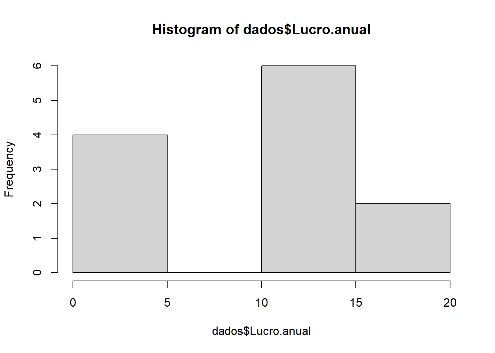
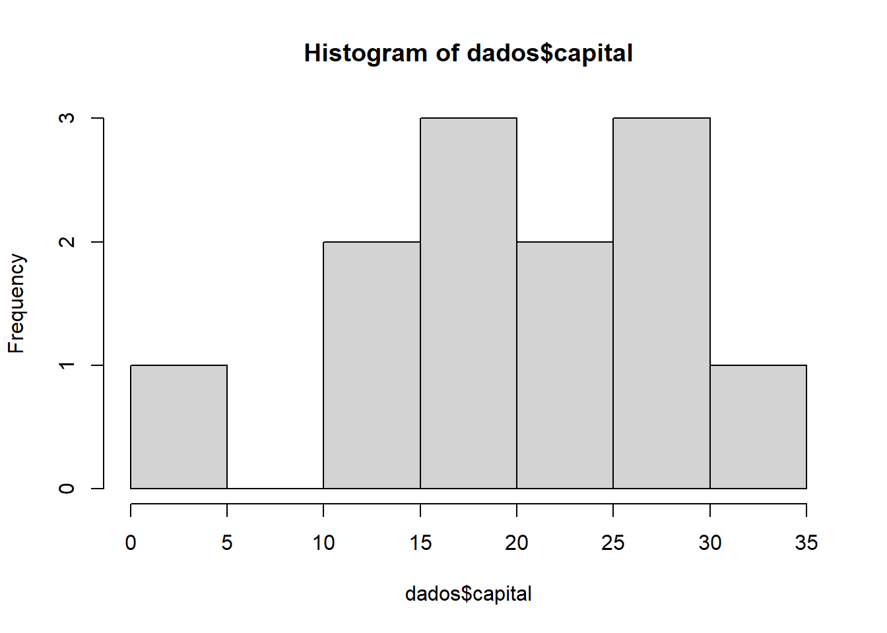
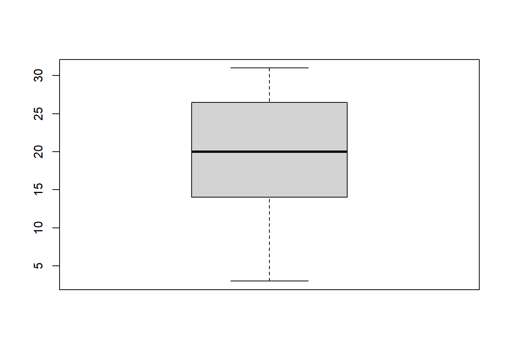
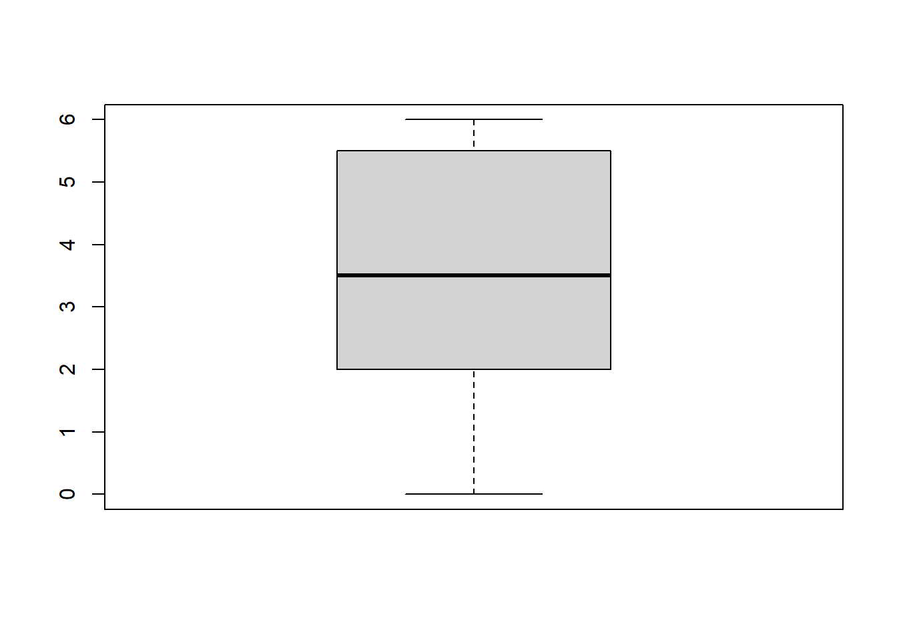
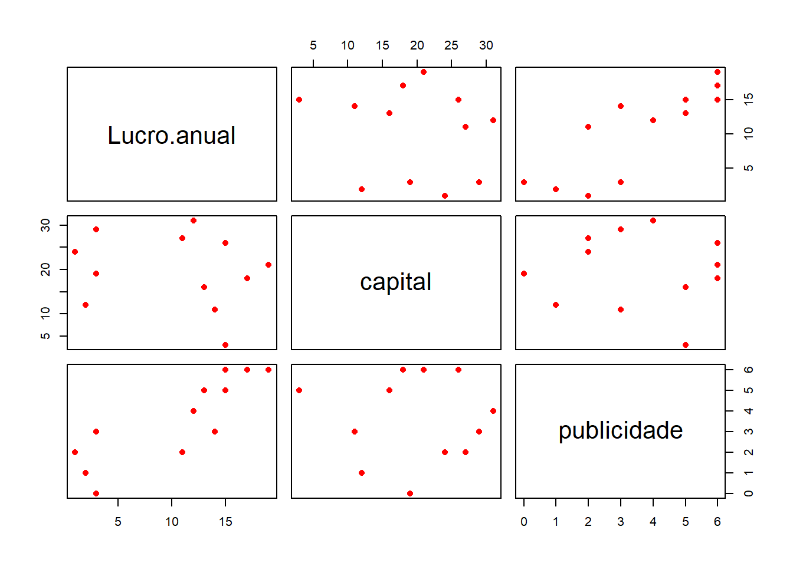

Diferentemente da RLS, que possui apenas uma variável independente xi, a RLM possui duas ou mais variáveis independentes (n variáveis) que são modeladas para tentar explicar a variável resposta y (variável dependente).
Assim, o valor de \(\beta~n~\) representa a alteração esperada na variável resposta (y) quando as demais variáveis xi são mantidas constantes.
Exemplo: Análise de lucro e publicidade
Dados: “dados_lucro_publicidade.csv”
Fonte: Prof. Guilherme Lopes de Oliveira
Objetivo: Introduzir a pratica do ajuste de modelos de regressão linear múltipla; fazer inferência no modelo, avaliar qualidade ajuste e fazer predição.
Warning
Limpando a memória do R (aconselhável): aplicar rm(list=ls(all=TRUE))
Ler conjunto de dados:
# Examina a estrutura do data frame "dados"dados<-read.csv("dados_lucro_publicidade.csv", header=T, dec=",", sep=";") str(dados)
'data.frame': 12 obs. of 3 variables:
$ Lucro.anual: int 12 13 3 3 11 19 1 14 15 17 ...
$ capital : int 31 16 29 19 27 21 24 11 26 18 ...
$ publicidade: int 4 5 3 0 2 6 2 3 6 6 ...
Uma vez carregados os dados da planilha no objeto “dados”, inicia-se a análise com uma estatítica descritiva das variáveis “Lucro anual” e “Capital”.
Análise descritiva (individual para cada variável):
summary(dados$Lucro.anual) #Medidas de Posicao
Min. 1st Qu. Median Mean 3rd Qu. Max.
1.00 3.00 12.50 10.42 15.00 19.00
sd(dados$Lucro.anual) #Desvio-padrao
[1] 6.402533
hist(dados$Lucro.anual) #Histograma

boxplot(dados$Lucro.anual) #Box-plot
summary(dados$capital) #Medidas de Posicao
Min. 1st Qu. Median Mean 3rd Qu. Max.
3.00 15.00 20.00 19.75 26.25 31.00
sd(dados$capital) #Desvio-padrao
[1] 8.302519
hist(dados$capital) #Histograma

boxplot(dados$capital) #Box-plot

summary(dados$publicidade) #Medidas de Posicao
Min. 1st Qu. Median Mean 3rd Qu. Max.
0.000 2.000 3.500 3.583 5.250 6.000
sd(dados$publicidade) #Desvio-padrao
[1] 2.065224
hist(dados$publicidade) #Histograma
boxplot(dados$publicidade) #Box-plot

Para visualizar os dados e suas possíveis relações lineares, elabora-se o gráfico de dispersão para as variáveis “Lucro anual” e “Capital”:
# Analise do relacionamento entre as variáveis: with(dados, plot(capital, Lucro.anual, pch=16))
Para visualiar todas as variáveis conjuntamente, em um único quadro, aplica-se o comando “pairs”:
#Comparações entre todas as variáveispairs(dados, col="red", pch=16)

É possível analisar as correlações entre as variáveis, utilizando-se o comando “cor”, escolhendo-se aqui o método de Pearson (variáveis quantitativas contínuas).
cor(dados, method ="pearson") #matriz de correlações
Lucro.anual capital publicidade
Lucro.anual 1.0000000 -0.18085313 0.84622827
capital -0.1808531 1.00000000 -0.03313677
publicidade 0.8462283 -0.03313677 1.00000000
Há também a possibilidade de visualizar a matriz de correlações de Pearson através de um gráfico, utilizando-se o comando “cor” do pacote “corrplot”:
#Instala e/ou carrega o pacote corrplotif(!require(corrplot)){install.packages("corrplot"); require(corrplot)}
Carregando pacotes exigidos: corrplot
Warning: pacote 'corrplot' foi compilado no R versão 4.5.2
Warning: pacote 'rgl' foi compilado no R versão 4.5.2
plot3d(x=dados$capital, y=dados$publicidade, z=dados$Lucro.anual, type ='s', radius =1, col='black')
Ajuste do modelo de regressao linear múltipla
Assim como na RLS, o ajuste é feito pelo comando “lm”. O que muda é a inserção de outras variáveis através do sinal de adição (+), como a seguir:
modelo1<-lm(Lucro.anual ~ capital + publicidade, data = dados) modelo1
Call:
lm(formula = Lucro.anual ~ capital + publicidade, data = dados)
Coefficients:
(Intercept) capital publicidade
3.402 -0.118 2.608
summary(modelo1) #Mostra testes t e outros resumos do ajuste
Call:
lm(formula = Lucro.anual ~ capital + publicidade, data = dados)
Residuals:
Min 1Q Median 3Q Max
-4.8043 -1.8136 -0.4532 1.9866 5.5675
Coefficients:
Estimate Std. Error t value Pr(>|t|)
(Intercept) 3.4022 3.4221 0.994 0.346105
capital -0.1180 0.1313 -0.899 0.392241
publicidade 2.6077 0.5277 4.941 0.000801 ***
---
Signif. codes: 0 '***' 0.001 '**' 0.01 '*' 0.05 '.' 0.1 ' ' 1
Residual standard error: 3.613 on 9 degrees of freedom
Multiple R-squared: 0.7395, Adjusted R-squared: 0.6816
F-statistic: 12.77 on 2 and 9 DF, p-value: 0.002351
summary(modelo1)$coefficients #Estimatica dos coeficientes
Estimate Std. Error t value Pr(>|t|)
(Intercept) 3.4022316 3.4221014 0.9941937 0.3461049408
capital -0.1179712 0.1312745 -0.8986609 0.3922411664
publicidade 2.6077303 0.5277435 4.9412835 0.0008008264
summary(modelo1)$sigma #Estimativa do desvio-padrao do erro (sigma)
[1] 3.612833
summary(modelo1)$sigma^2#Estimativa da variancia do erro (sigma^2)
[1] 13.05256
summary(modelo1)$r.squared*100#Valor do R2 summary(modelo1)\$adj.r.squared*100 #Valor do R2 ajustado
[1] 73.94794
O modelo ajustado fica sendo: Lucro=3,402 - 0,118Capital + 2,608Publicidade.
Algumas observações devem ser feitas quanto a saída do modelo acima:
os valores-p do intercepto e da variável capital são maiores do que o nível de significãncia (5%), assim, não são siginificativos para o modelo. Vimo que retirar o intercepto é pior do que deixá-lo no modelo (rever na RLS), mas a variável capital devemos retirá-la do modelo.
Modelo sem a variável “capital”
Para retirar a variável “capital” basta reescrever novo comando de ajustes para um novo objeto (modelo2) sem adicionar a parcela relativa ao “capital”, assim:
modelo2 <-lm(Lucro.anual ~ publicidade, data = dados) summary(modelo2)
Call:
lm(formula = Lucro.anual ~ publicidade, data = dados)
Residuals:
Min 1Q Median 3Q Max
-5.8863 -1.6687 0.3668 2.0488 5.1137
Coefficients:
Estimate Std. Error t value Pr(>|t|)
(Intercept) 1.0160 2.1378 0.475 0.64482
publicidade 2.6234 0.5224 5.022 0.00052 ***
---
Signif. codes: 0 '***' 0.001 '**' 0.01 '*' 0.05 '.' 0.1 ' ' 1
Residual standard error: 3.578 on 10 degrees of freedom
Multiple R-squared: 0.7161, Adjusted R-squared: 0.6877
F-statistic: 25.22 on 1 and 10 DF, p-value: 0.0005199
Após a retirada da variável “capita” po novo modelo (modelo2) apresentou valor-p significativo para a variável publicidade e um R2 de 0.7161.
O valor de R² a ser considerado na RLM é o R² ajustado. Como retirou-se uma variável (capital) e o modelo resultante possui apenas 1 variável agora (publicidade) considera-se o valor de R² apenas.
Finalmente, avalia-se o intervalo de confiança para os coeficientes do modelo:
Fazer estimacao intervalar dos coeficientes:
confint(modelo2, level=0.95) #Intervalos de Confianca para coeficientes
Call:
lm(formula = Tempo_Entrega ~ N_Itens + Distancia, data = delivery)
Residuals:
Min 1Q Median 3Q Max
-5.7880 -0.6629 0.4364 1.1566 7.4197
Coefficients:
Estimate Std. Error t value Pr(>|t|)
(Intercept) 2.341231 1.096730 2.135 0.044170 *
N_Itens 1.615907 0.170735 9.464 3.25e-09 ***
Distancia 0.014385 0.003613 3.981 0.000631 ***
---
Signif. codes: 0 '***' 0.001 '**' 0.01 '*' 0.05 '.' 0.1 ' ' 1
Residual standard error: 3.259 on 22 degrees of freedom
Multiple R-squared: 0.9596, Adjusted R-squared: 0.9559
F-statistic: 261.2 on 2 and 22 DF, p-value: 4.687e-16
A análise do modelo de RLM acima demonstra que as variáveis inseridas no modelo são todas significativas, tendo como ajuste o valor de R² ajustado igual a 0.9559, o que é um excelente ajuste de regressão. O valor-p do modelo também mostrou-se significativo (4.687e-16). Com issto, pode ser realizado a predicao dos valores médios da resposta a partir de um valor das variáveis explicativas com o uso da reta de regressao (por exemplo, N_itens = 13 e Distância de entreg igual a 650km):